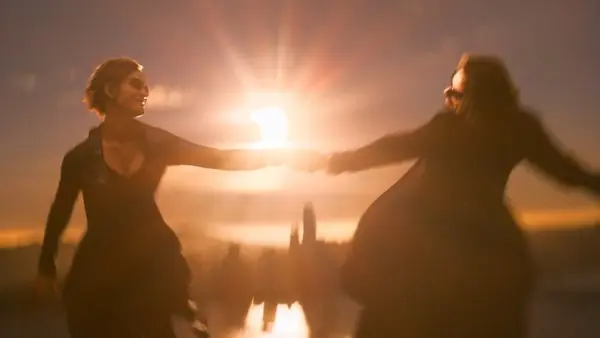

üíä Matrix Resurrecciones y la nostalgia como cárcel
Introducción
Matrix Resurrecciones fue tildada de decepcionante, confusa o innecesaria. Pero lo que muchos vieron como un error, fue en realidad una jugada maestra de Lana Wachowski: destruir la narrativa clásica como forma de protesta. Esta no es una secuela para complacer: es una red pill disfrazada de película mediocre, como una crítica feroz a la industria que convierte toda rebelión en mercancía y todo símbolo en souvenir. Una crítica al consumismo desenfrenado que convierte incluso la rebelión en paquete vendible
La nostalgia como prisión
El primer gran golpe de Matrix Resurrecciones es interno: Warner dentro de la película quiere hacer una secuela “con o sin Neo”. Ese espejo es real: la industria quiere seguir exprimiendo el pasado. Lana acepta, pero no para darles lo que esperan, sino para devolvérselo reconfigurado. La repetición no es homenaje, es cárcel. Y El revival de franquicias es la nueva Matrix. La película se ríe de sí misma, repite escenas, se autocita y se burla de los fans que solo quieren más de lo mismo. Y ese es justamente el mensaje:
“Ustedes no quieren despertar, ustedes quieren sentirse cómodos.”
Simulacro dentro del simulacro
Matrix ya no es el mundo digital que imita el real. Ahora es el sistema cultural que te da consuelo. Neo no está atrapado en una máquina: está atrapado en una franquicia. El videojuego de Neo no es solo una metáfora: es el nuevo código. El fanservice no es un regalo: es la prisión actualizada. Una programación emocional que ya no se instala en tu cabeza, sino en tu deseo. Y Lana lo sabe. Por eso te da justo lo que pedís, pero con un espejo detrás para que te veas consumiéndolo. Y esto te vuela la cabeza:
"Ya no es la programación social, es la programación emocional a través de la cultura pop."
La elección empaquetada
Cuando Morfeo nuevo le ofrece la pastilla roja, ya no se siente como una ruptura. Se siente como un ritual gastado. La rebelión ahora es mercancía. La “elección” ya está empaquetada. Ya está predigerida. Y es tremendo, porque lo que antes era símbolo de libertad, ahora es una ilusión de libertad. Tomar la pastilla no te despierta, solo te hace sentir parte de algo. Pero ¿y si eso también es parte de la Matrix?
"El escape también puede ser una forma de control."
Trinity como corazón
El núcleo de esta entrega no es la guerra, es el vínculo. Trinity no es una herramienta, es el propósito. Neo no vuela solo: vuelan juntos. Y eso, en un mundo que los quiso rotos y separados, es el acto de resistencia más puro. El final no es épico a propósito. Es íntimo. Es Lana diciéndole a la industria: “No me interesa seguir alimentando la máquina. Me interesa contar cómo me reconstruyo después de perder a mis padres y a mi amigo.” Por eso Neo y Trinity vuelan juntos. No es la pelea lo que importa, es el acto de amarse en un sistema que los quiere separados.
El despertar secuestrado
Desde su estreno en 1999, Matrix se convirtió en símbolo del “despertar”. Pero con el tiempo, esa metáfora fue cooptada por discursos conspiranoicos, discursos reaccionarios y coaches de autoyuda en TikTok. La red pill se volvió una marca: ya no significaba salir del sistema, sino adoptar otro sistema disfrazado de rebeldía.
Matrix 4 responde a eso. No con acción. Con incomodidad. Con la decisión de desarmar su propio mito para recuperar el sentido original del despertar: no como certeza, sino como pregunta. Una grieta que no te libera... pero ya no te deja mirar igual.
El cine incómodo como declaración
Matrix 4 no quiere gustarte. No quiere entretenerte. Quiere que te preguntes por qué esperabas que lo hiciera. Las peleas son torpes. El ritmo es raro. La épica es contenida. Todo eso no es un error: es parte del mensaje. Lana te dice: “No voy a dejar que usen mi historia para dormir a otros. Así que la destruyo, y la rehago incómoda.”
Reflexión personal
La verdadera red pill me la tiró YouTube, sin buscarlo ni esperarlo, no Morfeo. Y cuando la agarré, entendí que la Matrix no era digital: era cultural. Porque el sistema es tan adaptable que hasta te roba las herramientas que usás para liberarte y las empaqueta como producto para otros. Lo hace con las ideas, con los símbolos, con todo. Te da la red pill empaquetada en la góndola, lista para consumir. Y Lana se dio cuenta de eso y te dijo: “No voy a dejar que usen mi idea como una nueva blue pill.” Matrix 4 me mostró eso: que el sistema puede reciclar tu rebeldía si no estás atento. Por eso prefiero que me incomode una verdad antes que me abrace una mentira familiar.
“No sos libre porque elegiste. Sos libre cuando entendés que hasta la elección fue programada. Esta vez, la Matrix no se ve como un sistema… se siente como un recuerdo. Y eso la hace aún más difícil de dejar”